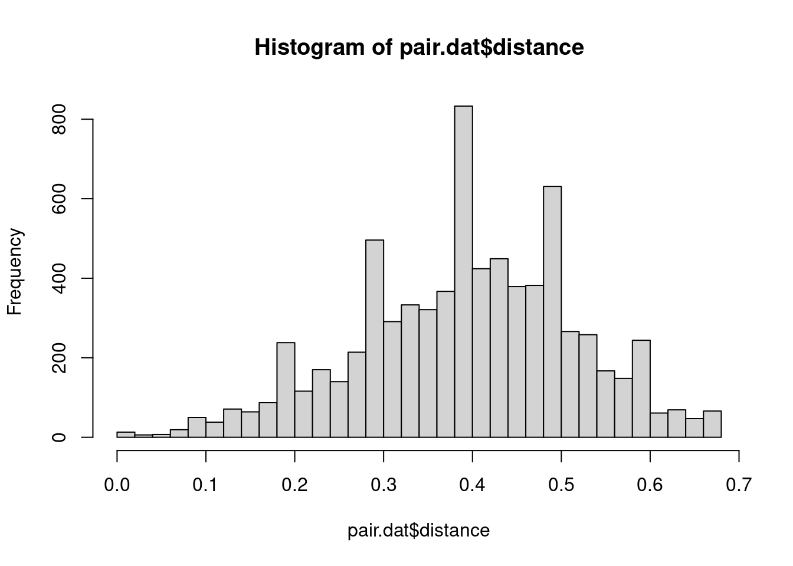
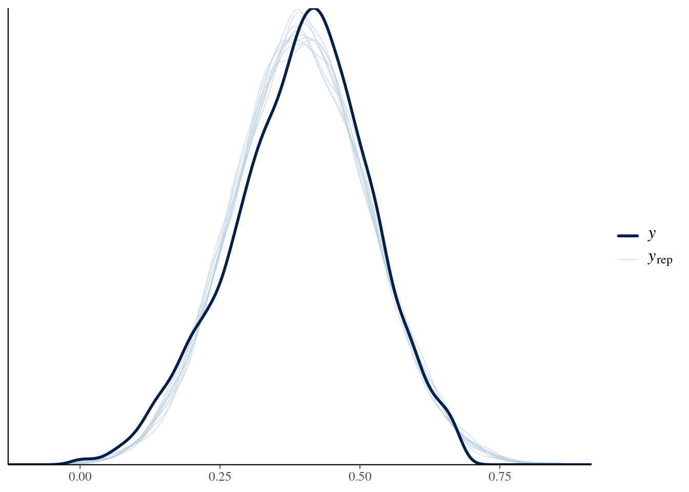
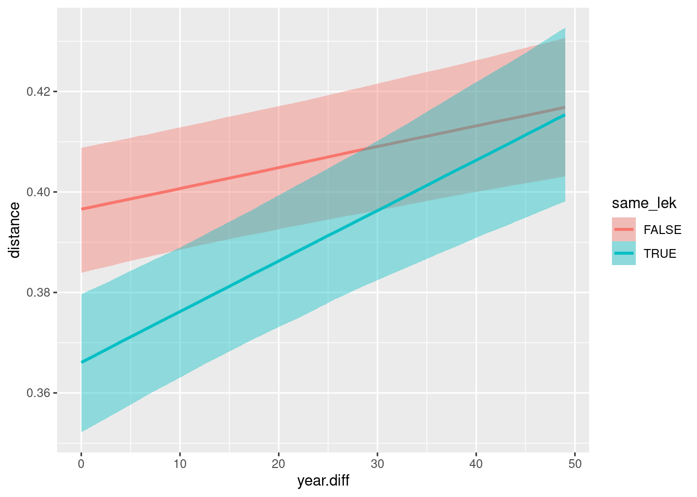

Code
# options to customize chunk outputs
knitr::opts_chunk$set(
tidy.opts = list(width.cutoff = 65),
tidy = TRUE,
message = FALSE
)Understanding cultural evolution of songs in hummingbird leks through the fossilized birth-death process
Source code and data found at https://github.com/maRce10/lbh_cultural_evolution_revBayes
# options to customize chunk outputs
knitr::opts_chunk$set(
tidy.opts = list(width.cutoff = 65),
tidy = TRUE,
message = FALSE
)library("irr")
library("TraMineR")
library("brms")
library("brmsish")Warning: replacing previous import 'brms::rstudent_t' by 'ggdist::rstudent_t'
when loading 'brmsish'Warning: replacing previous import 'brms::dstudent_t' by 'ggdist::dstudent_t'
when loading 'brmsish'Warning: replacing previous import 'brms::qstudent_t' by 'ggdist::qstudent_t'
when loading 'brmsish'Warning: replacing previous import 'brms::pstudent_t' by 'ggdist::pstudent_t'
when loading 'brmsish'Measure repeatability of segment labels
Inter-observer reliability:
segments_2_observers <- read.csv("./data/processed/segment_classification_2_observers.csv")length(unique(segments_2_observers$lek.song.type)) segments classified by two observers
kp <- irr::kappa2(segments_2_observers[, c("obs1", "obs2")])
kp Cohen's Kappa for 2 Raters (Weights: unweighted)
Subjects = 9620
Raters = 2
Kappa = 0.926
z = 201
p-value = 0 High repeatability of segment classification between two observers, with a Cohen’s kappa of 0.926, indicating substantial agreement.
Pairwise song similarity was analyzed using a Bayesian Gaussian linear mixed model to evaluate the effect of lek membership on song similarity.
The response variable was the pairwise Optimal Matching (OM) distance between song sequences.
Pairwise distances were calculated using Optimal Matching with biologically informed substitution costs that assigned lower penalties to substitutions within broad acoustic categories (pure tones or trills) than between categories.
Analyses were restricted to pairwise comparisons between songs recorded within the same study site, allowing us to test whether songs were more similar within leks than between neighboring leks while minimizing large-scale geographic effects.
Candidate fixed effects included:
same_lek, indicating whether two songs originated from the same lek,year_diff, representing the minimum temporal separation (years) between recorded occurrences of the two song types,same_lek × year_diff.Because each song type appeared in multiple pairwise comparisons, song identity was included as a multi-membership random intercept (mm(song1, song2)) to account for the non-independence of pairwise observations.
The fitted model was:
distance ~ same_lek * year_diff +
(1 | mm(song1, song2))The model was run in Stan (Carpenter et al. 2017) through the R platform (R Core Team 2021) using the package brms v.2.22.0 (Bürkner 2017), with a Gaussian likelihood and weakly informative default priors.
We present the effect size point estimate as the median posterior estimate, and report the 95% highest posterior density interval (HPDI) as a measure of uncertainty.
The model was run on three chains for 2500 iterations following a warm-up of 2500 iterations. Effective sample size was kept above 3000 for all parameters, and the potential scale reduction factor was used to assess convergence and kept below 1.05 for all parameter estimates.
Performance was checked visually by plotting the trace and distribution of posterior estimates for all chains, as well as the autocorrelation of successive sampled values to evaluate independence of posterior samples.
Model adequacy was assessed using posterior predictive check plots, to inspect whether model predictions aligned with the distribution and variability of the observed data.
# Read data
dat <- read.csv("./data/raw/segments_by_song_type.csv")
# Create sequence object
# Columns containing the 20 song segments
seqs <- dat[, grep("^X", names(dat))]
# Create sequence object
seq.obj <- seqdef(seqs)
# Compute Optimal Matching distances
states <- c("d", "p", "u", "s", "m", "f")
sm <- matrix(2, nrow = 6, ncol = 6, dimnames = list(states, states))
diag(sm) <- 0
# within pure tones
sm["d", "p"] <- sm["p", "d"] <- 1
sm["p", "u"] <- sm["u", "p"] <- 1
sm["d", "u"] <- sm["u", "d"] <- 1
# within trills
sm["s", "m"] <- sm["m", "s"] <- 1
sm["m", "f"] <- sm["f", "m"] <- 1
sm["s", "f"] <- sm["f", "s"] <- 1
dist.mat <- seqdist(seq.obj, method = "OM", sm = sm, indel = 3, norm = "maxlength")
# Convert distance matrix to pairwise data frame
pairs <- which(upper.tri(dist.mat), arr.ind = TRUE)
pair.dat <- data.frame(song1 = dat$song.type[pairs[, 1]], song2 = dat$song.type[pairs[,
2]], lek1 = dat$lek[pairs[, 1]], lek2 = dat$lek[pairs[, 2]], distance = dist.mat[pairs])
# Predictor variables
years <- read.csv("./data/raw/year_range_by_song_type.csv", stringsAsFactors = FALSE)
pair.dat$min.year.1 <- sapply(pair.dat$song1, function(x) {
min(years$year[years$song.type == x])
})
pair.dat$max.year.1 <- sapply(pair.dat$song1, function(x) {
max(years$year[years$song.type == x])
})
pair.dat$min.year.2 <- sapply(pair.dat$song2, function(x) {
min(years$year[years$song.type == x])
})
pair.dat$max.year.2 <- sapply(pair.dat$song2, function(x) {
max(years$year[years$song.type == x])
})
# Merge with pairwise data
pair.dat$year.diff <- sapply(1:nrow(pair.dat), function(i) {
song1 <- pair.dat$song1[i]
song2 <- pair.dat$song2[i]
year1 <- years$year[years$song.type == song1]
year2 <- years$year[years$song.type == song2]
# min of all possible differences
min(outer(year1, c(year2, 2222), FUN = function(x, y) abs(x -
y)))
})
lek.site <- data.frame(lek = c("BR1", "BR2", "CCE", "CCL", "LOC",
"SAT", "SJA", "STR", "SUR", "TR1", "TR2", "HC1", "HC2"), site = c(rep("BR",
2), rep("LS", 7), rep("TR", 2), rep("HC", 2)), stringsAsFactors = FALSE)
pair.dat$same_site <- sapply(1:nrow(pair.dat), function(i) {
lek1 <- pair.dat$lek1[i]
lek2 <- pair.dat$lek2[i]
site1 <- lek.site$site[lek.site$lek == lek1]
site2 <- lek.site$site[lek.site$lek == lek2]
site1 == site2
})
# keep only from same site
pair.dat <- pair.dat[pair.dat$same_site, ]
# head(pair.dat)
# Songs from the same lek?
pair.dat$same_lek <- pair.dat$lek1 == pair.dat$lek2
# Inspect the distribution of distances
hist(pair.dat$distance, breaks = 30)
# Bayesian regression
fit <- brm(distance ~ same_lek * year.diff + (1 | mm(song1, song2)),
data = pair.dat, family = gaussian(), chains = 3, cores = 3, iter = 5000,
control = list(adapt_delta = 0.99, max_treedepth = 15), file = "./data/processed/song_similarity_model.rds",
file_refit = "on_change")
# Summarize results
summary(fit) Family: gaussian
Links: mu = identity
Formula: distance ~ same_lek * year.diff + (1 | mm(song1, song2))
Data: pair.dat (Number of observations: 7465)
Draws: 4 chains, each with iter = 5000; warmup = 2500; thin = 1;
total post-warmup draws = 10000
Multilevel Hyperparameters:
~mmsong1song2 (Number of levels: 184)
Estimate Est.Error l-95% CI u-95% CI Rhat Bulk_ESS Tail_ESS
sd(Intercept) 0.08 0.00 0.07 0.09 1.00 1558 3431
Regression Coefficients:
Estimate Est.Error l-95% CI u-95% CI Rhat Bulk_ESS
Intercept 0.40 0.01 0.38 0.41 1.00 1121
same_lekTRUE -0.03 0.00 -0.04 -0.02 1.00 13951
year.diff 0.00 0.00 0.00 0.00 1.00 11482
same_lekTRUE:year.diff 0.00 0.00 0.00 0.00 1.00 13340
Tail_ESS
Intercept 2320
same_lekTRUE 8071
year.diff 8899
same_lekTRUE:year.diff 8449
Further Distributional Parameters:
Estimate Est.Error l-95% CI u-95% CI Rhat Bulk_ESS Tail_ESS
sigma 0.11 0.00 0.10 0.11 1.00 16601 6872
Draws were sampled using sampling(NUTS). For each parameter, Bulk_ESS
and Tail_ESS are effective sample size measures, and Rhat is the potential
scale reduction factor on split chains (at convergence, Rhat = 1).############################################################### First
############################################################### year
############################################################### of
############################################################### each
############################################################### song
############################################################### type
song.info <- unique(rbind(data.frame(song = pair.dat$song1, lek = pair.dat$lek1,
min.year = pair.dat$min.year.1), data.frame(song = pair.dat$song2,
lek = pair.dat$lek2, min.year = pair.dat$min.year.2)))
############################################################### Add
############################################################### same_lek
############################################################### if
############################################################### needed
pair.dat$same_lek <- pair.dat$lek1 == pair.dat$lek2
############################################################### Nearest
############################################################### neighbour
############################################################### within
############################################################### one
############################################################### year
############################################################### before
############################################################### first
############################################################### occurrence
songs <- song.info$song
nearest.same.lek <- rep(NA, length(songs))
for (i in seq_along(songs)) {
song <- songs[i]
t0 <- song.info$min.year[song.info$song == song]
# all pairwise comparisons involving this song
x <- pair.dat[pair.dat$song1 == song | pair.dat$song2 == song,
]
if (nrow(x) == 0)
next
# First year of the other song
other.year <- ifelse(x$song1 == song, x$min.year.2, x$min.year.1)
# Candidate songs: Candidate songs: first appeared in the
# same year or exactly one year earlier
keep <- other.year %in% c(t0 - 1, t0)
x <- x[keep, ]
if (nrow(x) == 0)
next
# Was there at least one candidate from the same lek?
if (!any(x$same_lek)) {
nearest.same.lek[i] <- NA
next
}
# nearest neighbour
mindist <- min(x$distance)
closest <- x[x$distance == mindist, ]
nearest.same.lek[i] <- any(closest$same_lek)
}
table(nearest.same.lek, useNA = "ifany")nearest.same.lek
FALSE TRUE <NA>
69 106 9 mean(nearest.same.lek, na.rm = TRUE)[1] 0.6057143sum(nearest.same.lek, na.rm = TRUE)/sum(!is.na(nearest.same.lek))[1] 0.6057143pp_check(fit)
fixef(fit) Estimate Est.Error Q2.5 Q97.5
Intercept 0.3965124761 6.408106e-03 0.3839041288 0.4087786766
same_lekTRUE -0.0304654549 4.507073e-03 -0.0392576235 -0.0216182251
year.diff 0.0004128877 9.585074e-05 0.0002234940 0.0005988732
same_lekTRUE:year.diff 0.0005946398 1.896479e-04 0.0002179834 0.0009632403conditional_effects(fit, effects = "year.diff:same_lek")
hypothesis(fit, "year.diff > 0")Hypothesis Tests for class b:
Hypothesis Estimate Est.Error CI.Lower CI.Upper Evid.Ratio Post.Prob
1 (year.diff) > 0 0 0 0 0 Inf 1
Star
1 *
---
'CI': 90%-CI for one-sided and 95%-CI for two-sided hypotheses.
'*': For one-sided hypotheses, the posterior probability exceeds 95%;
for two-sided hypotheses, the value tested against lies outside the 95%-CI.
Posterior probabilities of point hypotheses assume equal prior probabilities.same_lek and year_diff (posterior median estimate = -0.0006, 95% HPDI: -0.0010 to -0.0002).hypothesis(fit, "same_lekTRUE:year.diff > 0")Hypothesis Tests for class b:
Hypothesis Estimate Est.Error CI.Lower CI.Upper Evid.Ratio
1 (same_lekTRUE:yea... > 0 0 0 0 0 1249
Post.Prob Star
1 1 *
---
'CI': 90%-CI for one-sided and 95%-CI for two-sided hypotheses.
'*': For one-sided hypotheses, the posterior probability exceeds 95%;
for two-sided hypotheses, the value tested against lies outside the 95%-CI.
Posterior probabilities of point hypotheses assume equal prior probabilities.hypothesis(fit, "year.diff + same_lekTRUE:year.diff > 0")Hypothesis Tests for class b:
Hypothesis Estimate Est.Error CI.Lower CI.Upper Evid.Ratio
1 (year.diff+same_l... > 0 0 0 0 0 Inf
Post.Prob Star
1 1 *
---
'CI': 90%-CI for one-sided and 95%-CI for two-sided hypotheses.
'*': For one-sided hypotheses, the posterior probability exceeds 95%;
for two-sided hypotheses, the value tested against lies outside the 95%-CI.
Posterior probabilities of point hypotheses assume equal prior probabilities.─ Session info ───────────────────────────────────────────────────────────────
setting value
version R version 4.3.2 (2023-10-31)
os Ubuntu 22.04.2 LTS
system x86_64, linux-gnu
ui X11
language es_ES:en
collate en_US.UTF-8
ctype en_US.UTF-8
tz America/Costa_Rica
date 2026-07-09
pandoc 3.6.3 @ /usr/lib/rstudio/resources/app/bin/quarto/bin/tools/x86_64/ (via rmarkdown)
quarto 1.4.549 @ /usr/local/bin/quarto
─ Packages ───────────────────────────────────────────────────────────────────
package * version date (UTC) lib source
abind 1.4-8 2024-09-12 [1] CRAN (R 4.3.2)
ape 5.8-1 2024-12-16 [1] CRAN (R 4.3.2)
arrayhelpers 1.1-0 2020-02-04 [1] CRAN (R 4.3.2)
backports 1.5.1 2026-04-03 [1] CRAN (R 4.3.2)
bayesplot 1.15.0 2025-12-12 [1] CRAN (R 4.3.2)
boot 1.3-32 2025-08-29 [1] CRAN (R 4.3.2)
bridgesampling 1.2-1 2025-11-19 [1] CRAN (R 4.3.2)
brms * 2.23.0 2025-09-09 [1] CRAN (R 4.3.2)
brmsish * 1.0.0 2025-12-18 [1] CRANs (R 4.3.2)
Brobdingnag 1.2-9 2022-10-19 [1] CRAN (R 4.3.2)
cachem 1.1.0 2024-05-16 [1] CRAN (R 4.3.2)
checkmate 2.3.4 2026-02-03 [1] CRAN (R 4.3.2)
cli 3.6.6 2026-04-09 [1] CRAN (R 4.3.2)
cluster 2.1.8.2 2026-02-05 [1] CRAN (R 4.3.2)
coda 0.19-4.1 2024-01-31 [1] CRAN (R 4.3.2)
codetools 0.2-20 2024-03-31 [1] CRAN (R 4.3.2)
colorspace 2.1-2 2025-09-22 [1] CRAN (R 4.3.2)
cowplot 1.2.0 2025-07-07 [1] CRAN (R 4.3.2)
curl 7.1.0 2026-04-22 [1] CRAN (R 4.3.2)
devtools 2.4.6 2025-10-03 [1] CRAN (R 4.3.2)
digest 0.6.39 2025-11-19 [1] CRAN (R 4.3.2)
distributional 0.8.0 2026-06-23 [1] CRAN (R 4.3.2)
dplyr 1.2.1 2026-04-03 [1] CRAN (R 4.3.2)
ellipsis 0.3.3 2026-04-04 [1] CRAN (R 4.3.2)
emmeans 2.0.3 2026-04-09 [1] CRAN (R 4.3.2)
estimability 1.5.1 2024-05-12 [1] CRAN (R 4.3.2)
evaluate 1.0.5 2025-08-27 [1] CRAN (R 4.3.2)
farver 2.1.2 2024-05-13 [1] CRAN (R 4.3.2)
fastmap 1.2.0 2024-05-15 [1] CRAN (R 4.3.2)
formatR 1.14 2023-01-17 [1] CRAN (R 4.3.2)
fs 2.0.1 2026-03-24 [1] CRAN (R 4.3.2)
generics 0.1.4 2025-05-09 [1] CRAN (R 4.3.2)
ggdist 3.3.3 2025-04-23 [1] CRAN (R 4.3.2)
ggplot2 4.0.3 2026-04-22 [1] CRAN (R 4.3.2)
glue 1.8.1 2026-04-17 [1] CRAN (R 4.3.2)
gridExtra 2.3.1 2026-06-25 [1] CRAN (R 4.3.2)
gtable 0.3.6 2024-10-25 [1] CRAN (R 4.3.2)
htmltools 0.5.9 2025-12-04 [1] CRAN (R 4.3.2)
htmlwidgets 1.6.4 2023-12-06 [1] CRAN (R 4.3.2)
inline 0.3.21 2025-01-09 [1] CRAN (R 4.3.2)
irr * 0.85 2026-06-17 [1] CRAN (R 4.3.2)
jsonlite 2.0.0 2025-03-27 [1] CRAN (R 4.3.2)
kableExtra 1.4.0 2024-01-24 [1] CRAN (R 4.3.2)
knitr 1.51 2025-12-20 [1] CRAN (R 4.3.2)
labeling 0.4.3 2023-08-29 [1] CRAN (R 4.3.2)
lattice 0.22-9 2026-02-09 [1] CRAN (R 4.3.2)
lifecycle 1.0.5 2026-01-08 [1] CRAN (R 4.3.2)
loo 2.9.0 2025-12-23 [1] CRAN (R 4.3.2)
lpSolve * 5.6.23 2024-12-14 [1] CRAN (R 4.3.2)
magrittr 2.0.5 2026-04-04 [1] CRAN (R 4.3.2)
MASS 7.3-55 2022-01-13 [4] CRAN (R 4.1.2)
Matrix 1.6-5 2024-01-11 [1] CRAN (R 4.3.2)
matrixStats 1.5.0 2025-01-07 [1] CRAN (R 4.3.2)
memoise 2.0.1 2021-11-26 [3] CRAN (R 4.1.2)
mgcv 1.8-39 2022-02-24 [4] CRAN (R 4.1.2)
multcomp 1.4-30 2026-03-09 [1] CRAN (R 4.3.2)
mvtnorm 1.4-1 2026-06-06 [1] CRAN (R 4.3.2)
nlme 3.1-169 2026-03-27 [1] CRAN (R 4.3.2)
otel 0.2.0 2025-08-29 [1] CRAN (R 4.3.2)
pbapply 1.7-4 2025-07-20 [1] CRAN (R 4.3.2)
permute 0.9-10 2026-02-06 [1] CRAN (R 4.3.2)
pillar 1.11.1 2025-09-17 [1] CRAN (R 4.3.2)
pkgbuild 1.4.8 2025-05-26 [1] CRAN (R 4.3.2)
pkgconfig 2.0.3 2019-09-22 [3] CRAN (R 4.0.1)
pkgload 1.5.3 2026-06-15 [1] CRAN (R 4.3.2)
plyr 1.8.9 2023-10-02 [1] CRAN (R 4.3.2)
posterior 1.7.0 2026-04-01 [1] CRAN (R 4.3.2)
purrr 1.2.2 2026-04-10 [1] CRAN (R 4.3.2)
QuickJSR 1.10.0 2026-05-17 [1] CRAN (R 4.3.2)
R6 2.6.1 2025-02-15 [1] CRAN (R 4.3.2)
RColorBrewer 1.1-3 2022-04-03 [1] CRAN (R 4.3.2)
Rcpp * 1.1.1-1.1 2026-04-24 [1] CRAN (R 4.3.2)
RcppParallel 5.1.11-2 2026-03-05 [1] CRAN (R 4.3.2)
remotes 2.5.0 2024-03-17 [1] CRAN (R 4.3.2)
reshape2 1.4.5 2025-11-12 [1] CRAN (R 4.3.2)
rlang 1.2.0 2026-04-06 [1] CRAN (R 4.3.2)
rmarkdown 2.31 2026-03-26 [1] CRAN (R 4.3.2)
rstan 2.32.7 2025-03-10 [1] CRAN (R 4.3.2)
rstantools 2.6.0 2026-01-10 [1] CRAN (R 4.3.2)
rstudioapi 0.19.0 2026-06-11 [1] CRAN (R 4.3.2)
S7 0.2.2 2026-04-22 [1] CRAN (R 4.3.2)
sandwich 3.1-1 2024-09-15 [1] CRAN (R 4.3.2)
scales 1.4.0 2025-04-24 [1] CRAN (R 4.3.2)
sessioninfo 1.2.4 2026-06-04 [1] CRAN (R 4.3.2)
StanHeaders 2.32.10 2024-07-15 [1] CRAN (R 4.3.2)
stringi 1.8.7 2025-03-27 [1] CRAN (R 4.3.2)
stringr 1.6.0 2025-11-04 [1] CRAN (R 4.3.2)
survival 3.8-6 2026-01-16 [1] CRAN (R 4.3.2)
svglite 2.2.2 2025-10-21 [1] CRAN (R 4.3.2)
svUnit 1.0.8 2025-08-26 [1] CRAN (R 4.3.2)
systemfonts 1.3.2 2026-03-05 [1] CRAN (R 4.3.2)
tensorA 0.36.2.1 2023-12-13 [1] CRAN (R 4.3.2)
textshaping 1.0.5 2026-03-06 [1] CRAN (R 4.3.2)
TH.data 1.1-5 2025-11-17 [1] CRAN (R 4.3.2)
tibble 3.3.1 2026-01-11 [1] CRAN (R 4.3.2)
tidybayes 3.0.7 2024-09-15 [1] CRAN (R 4.3.2)
tidyr 1.3.2 2025-12-19 [1] CRAN (R 4.3.2)
tidyselect 1.2.1 2024-03-11 [1] CRAN (R 4.3.2)
TraMineR * 2.2-13 2025-12-14 [1] CRAN (R 4.3.2)
usethis 3.2.1 2025-09-06 [1] CRAN (R 4.3.2)
V8 8.2.0 2026-04-21 [1] CRAN (R 4.3.2)
vctrs 0.7.3 2026-04-11 [1] CRAN (R 4.3.2)
vegan 2.7-5 2026-05-25 [1] CRAN (R 4.3.2)
viridis 0.6.5 2024-01-29 [1] CRAN (R 4.3.2)
viridisLite 0.4.3 2026-02-04 [1] CRAN (R 4.3.2)
withr 3.0.3 2026-06-19 [1] CRAN (R 4.3.2)
xfun 0.59 2026-06-19 [1] CRAN (R 4.3.2)
xml2 1.6.0 2026-06-22 [1] CRAN (R 4.3.2)
xtable 1.8-8 2026-02-22 [1] CRAN (R 4.3.2)
yaml 2.3.12 2025-12-10 [1] CRAN (R 4.3.2)
zoo 1.8-15 2025-12-15 [1] CRAN (R 4.3.2)
[1] /home/marce/R/x86_64-pc-linux-gnu-library/4.3
[2] /usr/local/lib/R/site-library
[3] /usr/lib/R/site-library
[4] /usr/lib/R/library
* ── Packages attached to the search path.
──────────────────────────────────────────────────────────────────────────────